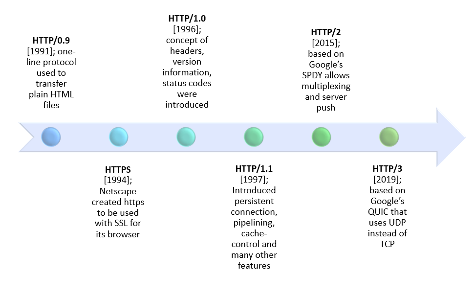

HTTP2 Vs. HTTP1 or HTTP1 Vs. HTTP2 – Let’s Understand The Two Protocols
HTTP/1.1 has been around for more than a decade. With Google’s SPDY leading the way in 2015, the IETF (Internet Engineering Task Force) gave us HTTP/2, which introduces several features to reduce page load times. Let’s compare HTTP2 Vs. HTTP1.1 in detail.
HTTP/2 achieves faster webpage loading without performance optimizations that require extensive human efforts in terms of development. It significantly reduces the complexities that had crept into HTTP/1.1 and gives us a robust protocol which, though not without its flaws, will perhaps stand the test of time. Before making this leap forward, let’s trace our steps back to when the internet was in its infancy to understand how the different versions evolved into the current form.
The Beginnings of HTTP & The Internet
Our story begins in 1969, with a program called Advanced Research Projects Agency Network (ARPANET). ARPANET used packet switching and allowed multiple computers to communicate with each other on a single network. However, this was just a by-product. The original intention behind ARPANET was to design a time-sharing system that allowed research institutes to share their computer resources for effective utilization of processing power.
Before then, sometime during the 19th century, the seeds for the existence of the internet as we know it today had already been sown with the invention of electricity and the telegraph. With Morse sending the first telegraphic message in 1844 and the first cable being laid across Atlantic, the telegraph network infrastructure had spread its roots through continents and across oceans. In years to come, this would become the very foundation on which the internet was built. In 1973, Kahn and Cerf designed the TCP/IP protocol suite which was adopted by ARPANET a decade later, and from this point on, we witness the development of an interconnected network. The internet took a more recognizable form with the invention of the World Wide Web (that used HTTP as its underlying protocol) by Tim Berners-Lee and the Commercial Internet eXchange (CIX) that allowed a free exchange of TCP/IP traffic between ISPs.
Evolution of HTTP
HTTP (Hypertext Transfer Protocol) is a set of rules that runs on top of the TCP/IP suite of protocols and defines how files are to be transferred between clients and servers on the world wide web.

The Beginning of HTTP: Version 0.9 & 1.0
In the earliest phase (HTTP/0.9), the HTTP protocol did not use headers and only transmitted plain HTML files. It was a one-line protocol only supporting the GET method.

As the need to exchange more than just plain HTML emerged along with the client and server applications becoming more mature, HTTP/1.0 (between 1991-1996) introduced several new features.
Key Features of HTTP/1.0:
- The concept of headers both for requests (from the client machine) as well as responses (from servers) was introduced. The use of headers such as GET, POST, HEAD added extended flexibility, none of which was possible with the earlier version.
- Version information was now included.
- It allowed a single request/response for every TCP connection.
- Status codes were used to indicate successful requests and to indicate transmission errors.
- The content-type header made it possible to send files other than plain HTML, including scripts and media.
Created for Added Security: HTTPS
In 1994, Netscape Communications created HTTPS (Hypertext Transfer Protocol Secure) to be used with SSL for its web browser, Netscape Navigator. The need for encrypted transmission channels emerged as the applications being designed shifted towards a more commercial market where advertisers, unknown individuals, and cybercriminals could have easy access to personal data. SSL evolved into TLS with TLS version 1.2 and 1.3 being used currently.
The Protocol Serving Netizens for Over 15 Years: HTTP/1.1
HTTP/1.1, the first standardized version of HTTP, was introduced in 1997. It presented significant performance optimizations (over HTTP/0.9 and HTTP/1.0) and transformed the way requests and responses were exchanged between clients and servers.
Key Features of HTTP/1.1:
- It was no longer required for each connection to be terminated immediately after every request was served with a response; instead, with the keep-alive header, it was possible to have persistent connections. It allowed multiple requests/responses per TCP connection.
- The Upgrade header was used to indicate a preference from the client that made it possible to switch to a more preferred protocol if found appropriate by the server.
- HTTP/1.1 provided support for chunk transfers that allowed streaming of content dynamically as chunks and for additional headers to be sent after the message body. This enhancement was particularly useful in cases where values of a field remained unknown until the content had been produced. For example, when the content had to be digitally signed, it was not possible to do so before the entire content gets generated.
- Other features that reinforced its stability were introduced such as:
- pipelining (the second request is sent before the response to the first is adequately served)
- content negotiation (an exchange between client and server to determine the media type, it also provides the provision to serve different versions of a resource at the same URI)
- cache control (used to specify caching policies in both requests and responses)
The Protocol Designed to Speed Up Today’s Complex Web pages: HTTP/2
At the beginning of 2010, Google introduced an experimental protocol, SPDY, which supported multiplexing (multiple requests/responses sent and received asynchronously over a single TCP connection) but as it gained traction IETF’s HTTP Working Group came up with HTTP/2 in 2015, which is based on the SPDY protocol.
Key Features of HTTP/2:
-
It introduces the concept of a server push where the server anticipates the resources that will be required by the client and pushes them prior to the client making requests. The client retains the authority to deny the server push; however, in most cases, this feature adds a lot of efficiency to the process.
-
Introduces the concept of multiplexing that interleaves the requests and responses without head-of-line blocking and does so over a single TCP connection.

-
It is a binary protocol i.e. only binary commands in the form of 0s and 1s are transmitted over the wire. The binary framing layer divides the message into frames that are segregated based on their type – Data or Header. This feature greatly increases efficiency in terms of security, compression and multiplexing.
-
HTTP/2 uses HPACK header compression algorithm that is resilient to attacks like CRIME and utilizes static Huffman encoding.
HTTP/3, the next version in the series, is based on Google’s QUIC which, unlike its precursors is a drastic shift to UDP. Given the gradual adoption rate of HTTP/2, HTTP/3 with its security challenges (that comes into play the moment we switch from TCP to UDP) is expected to face some difficulties.
HTTP/1.x vs HTTP/2: A Comparative Study
HTTP2 Vs. HTTP1 is not a debate at all. HTTP2 is much faster and more reliable than HTTP1. HTTP1 loads a single request for every TCP connection, while HTTP2 avoids network delay by using multiplexing.
HTTP is a network delay sensitive protocol in the sense that if there is less network delay, then the page loads faster. However, an impressive increase in network bandwidth only slightly improves page load time. This is key to understanding the differences in performance efficiencies between the different versions of HTTP. Back in the day when people used dial up modems web pages were simple and it was the actual data transfer between the server and the client that contributed towards the largest chunk of the page load time. Today the actual downloading of resources from server takes a negligible portion of the total page load time due to the tremendous increase in bandwidth availability. It is the time taken to establish the TCP connection and making requests that impacts performance. It was initially recommended to use only two connections per hostname but today most browsers use six connections per hostname. When we talk about http vs http2 in terms of performance it is important to note that a lot of performance optimizations adopted by HTTP/1.1 introduced complexities in terms of developmental efforts as well as network congestion that HTTP/2 attempts to address.
Header CompressionHeaders are sent on every request leading to a lot of duplicate data being sent uncompressed across the wire.Header compression is included by default in HTTP/2 using HPACK.Performance OptimizationProvides support for caching to deliver pages faster.Spriting, concatenating, inlining, domain sharding are some of the optimizations used as a workaround to the ‘six connections per host’ rule.Removes the need for unnecessary optimization hacks.Protocol TypeText based protocol that is in the readable form.It is a binary protocol (HTTP requests are sent in the form of 0s and 1s). Needs to be converted back from binary in order to read it.SecuritySSL is not required but recommended. Digest authentication used in HTTP1.1 is an improvement over HTTP1.0. HTTPS uses SSL/TLS for secure encrypted communication.Though security is still not mandatory, it is mostly encrypted (though it is not enforced) since almost all clients require traffic to be encrypted. It also has some minimum standards, such as minimum key size for encryption. TLS 1.2 etc.
Header CompressionHeaders are sent on every request leading to a lot of duplicate data being sent uncompressed across the wire.Header compression is included by default in HTTP/2 using HPACK.Performance OptimizationProvides support for caching to deliver pages faster.Spriting, concatenating, inlining, domain sharding are some of the optimizations used as a workaround to the ‘six connections per host’ rule.Removes the need for unnecessary optimization hacks.Protocol TypeText based protocol that is in the readable form.It is a binary protocol (HTTP requests are sent in the form of 0s and 1s). Needs to be converted back from binary in order to read it.SecuritySSL is not required but recommended. Digest authentication used in HTTP1.1 is an improvement over HTTP1.0. HTTPS uses SSL/TLS for secure encrypted communication.Though security is still not mandatory, it is mostly encrypted (though it is not enforced) since almost all clients require traffic to be encrypted. It also has some minimum standards, such as minimum key size for encryption. TLS 1.2 etc.
Header CompressionHeaders are sent on every request leading to a lot of duplicate data being sent uncompressed across the wire.Header compression is included by default in HTTP/2 using HPACK.Performance Optimization Provides support for caching to deliver pages faster. Spriting, concatenating, inlining, domain sharding are some of the optimizations used as a workaround to the ‘six connections per host’ rule.Removes the need for unnecessary optimization hacks. Protocol Type Text based protocol that is in the readable form.It is a binary protocol (HTTP requests are sent in the form of 0s and 1s). Needs to be converted back from binary in order to read it. SecuritySSL is not required but recommended. Digest authentication used in HTTP1.1 is an improvement over HTTP1.0. HTTPS uses SSL/TLS for secure encrypted communication.Though security is still not mandatory, it is mostly encrypted (though it is not enforced) since almost all clients require traffic to be encrypted. It also has some minimum standards, such as minimum key size for encryption. TLS 1.2 etc.
How to Implement HTTP/2 on Your Website
Since using HTTP/2 is an invisible process when correctly implemented, your website may already be using it without your realization. There is an easy way to check this:
- Open the web developer tool on the web browser (like Firefox).
- Under the network tab, select any of the resources and check the version number under the headers tab
While HTTP/2 does not mandate the use of SSL, it is crucial to install an SSL certificate because the leading browsers, including Firefox and Chrome, have decided to implement HTTP/2 only over TLS (HTTPS). In order to enable HTTP/2 it is essential to get an SSL/TLS certificate and make every page on the website https.
At the web server level, it could be as simple as a software update, for example, Apache began support for HTTP/2 in version 2.4.17.
Adoption Of HTTP/2
HTTP/2 penetration on the client side is more than 70% as most major browsers support HTTP/2 and on the server side we have major tech giants like Google, Facebook, Nginx, etc. who have their own servers supporting HTTP/2. The adoption rate, according to W3Techs, is currently around 29% globally.